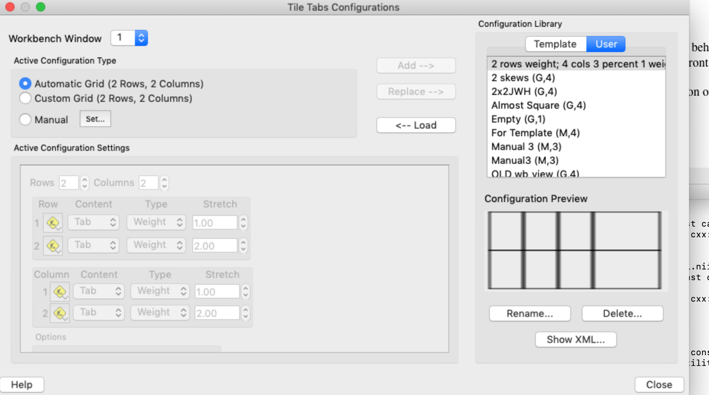

Tile Tabs Configuration
Tile Tabs Configuration contains options for
different ways to arrange Viewing
Tabs in the Viewing
Area.
Tile Tabs Configuration in Workbench Window
This section contains the tile tabs
configuration for the selected Workbench Window. When a
scene is saved with Tile Tabs enabled, the selected configuration
is saved to the scene and is restored when the scene is displayed.
- Workbench Window - Selects the Window for adjusting the
Tile Tabs Configuration
- Automatic
Configuration - When selected, Workbench will adjust
the number of rows and columns so that all tabs are displayed.
- Custom Configuration -
Allows the user to set the number of rows/columns and their
stretch factors.
- Dimensions (Rows / Columns) -
Number of Rows and Columns in the Custom Configuration
- Stretch Factors - The Stretch
Factors function as weights and are used to allocate space
assigned to rows and columns. For example, a row with a
stretch factor of 2 is double the height of a row with a
stretch factor of 1. The percentage values indicate the
height (width) that a row (column) occupies in the graphics
region.
User Configuration
The User Configuration contains Tile Tabs
Configurations that have been created by the user. These
configurations are saved in the user's preferences and thus are
available in future Workbench sessions.
- New - Click this button to create
a new User Configuration
- Rename - Click this button to
rename the selected User Configuration
- Delete - Click this button to
delete the selected User Configuration
Copy and Load Push Buttons
- Replace - Replaces the selected
User Configuration with the content of the Custom
Configuration
- Load - Copies the selected User
Configuration into the Custom Configuration
